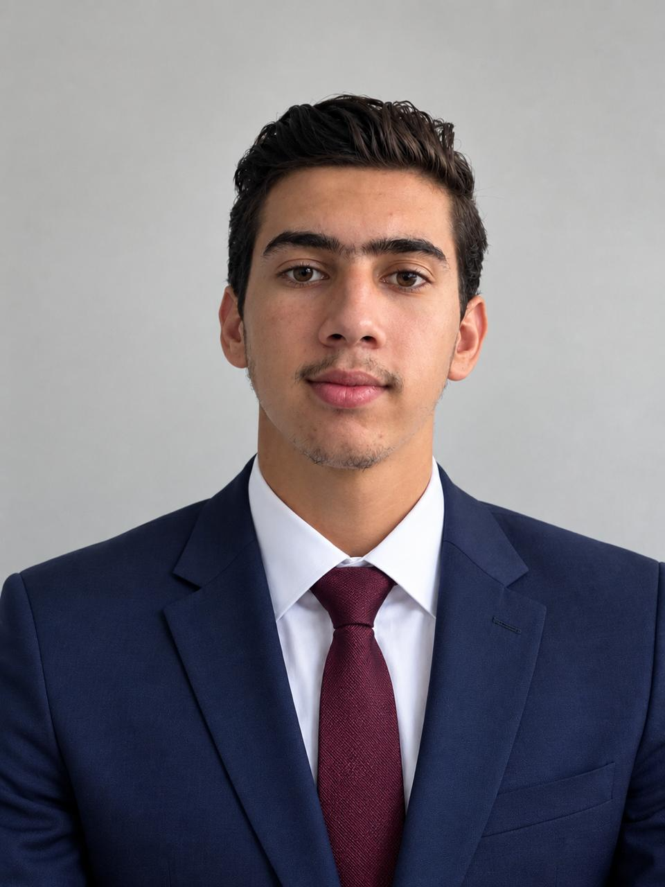

Jeu d'échecs en C++
Un jeu d'échecs complet développé en C++, composé de deux parties : le moteur du jeu (la logique) et une interface graphique pour jouer.
Voir sur GitHub →Bonjour, je suis
Étudiant en 3e année — Ingénierie logicielle
Je transforme des idées en logiciels, du code bas niveau aux interfaces graphiques. Je suis à la recherche de projets et d'un stage pour mettre mes compétences en pratique.

Étudiant en troisième année d'ingénierie logicielle à l'ESISA, à Fès, je me forme à la conception et au développement de logiciels. Je travaille aussi bien sur le web (HTML, CSS, JavaScript) que sur des langages plus proches de la machine comme le C, le C++ et l'assembleur. J'aime comprendre comment les choses fonctionnent de l'intérieur et construire des projets complets, de la logique jusqu'à l'interface.
Un jeu d'échecs complet développé en C++, composé de deux parties : le moteur du jeu (la logique) et une interface graphique pour jouer.
Voir sur GitHub →Une opportunité, un projet, une question ? Écrivez-moi.
y.faraj@esisa.ac.ma+212 6 67 68 20 14 · Fès, Maroc